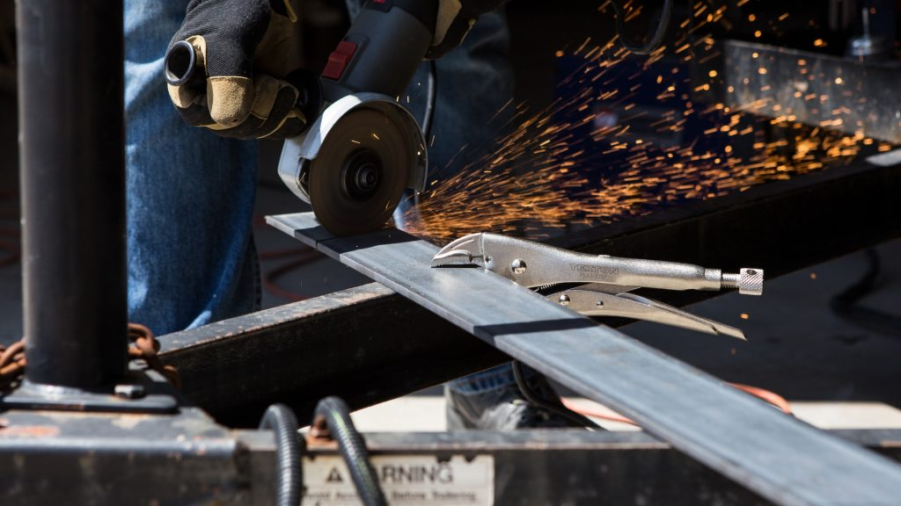

Explore a variety of multimedia content, including audio clips, videos, and more. Learn about our products and brand through visual and audio experiences.
Watch this video to get an inside look at how we manufacture our high-quality circular saws.
Listen to our latest product overview in this audio clip.
Check out this demonstration video to see how our circular saws perform in action.
Get a behind-the-scenes look at how we produce our precision tools at ArcBlade Works.
Our customers share their experiences with our products and services.
"ArcBlade Works' circular saws are the most reliable tools I've ever used!" - John D., Professional Carpenter
"The quality and durability are outstanding. Highly recommend to anyone in the industry." - Sarah L., DIY Enthusiast